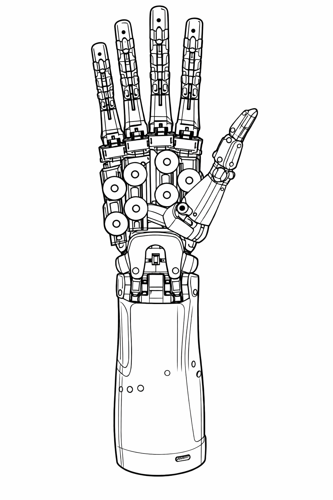

DexHand 开源灵巧手项目开发与验证
DexHand Open-Source Dexterous Hand Development & Validation
2026.02 - 至今
核心成员
机器人硬件
Arduino
ROS2
RViz
本项目围绕开源灵巧手 DexHand 展开，重点包括机械结构梳理、腱驱动方式分析、 Arduino Nano RP2040 Connect 多舵机控制方案研究，以及 ROS2 仿真环境搭建与基础运动验证。
项目封面 / Cover

项目简介 / Overview
- 系统梳理 DexHand 的机械结构、腱驱动方式、电控架构和软件工作流。
- 研究基于 Arduino Nano RP2040 Connect 的多舵机控制逻辑，包括供电、布线和执行器选型。
- 搭建 ROS2 仿真环境，完成模型启动、RViz 可视化与基础关节运动验证。
- 为后续实物搭建、控制算法开发与功能演示提供基础验证平台。
图片展示 / Gallery


你可以把实物照片、结构图、接线图、RViz 截图都丢进
assets/ 文件夹，
再把文件名改成这里对应的名字。
项目文件 / Project Files
开发内容 / What I Worked On
- 机械结构理解：分析手指、手掌、手腕与前臂的组成关系。
- 驱动方式研究：理解 tendon-driven 腱驱动结构与多自由度协调方式。
- 控制硬件学习：基于 Arduino Nano RP2040 Connect 研究多舵机控制流程。
- 仿真环境搭建：完成 ROS2 环境部署、模型启动与 RViz 可视化验证。
你说的“上传项目文件”怎么做
GitHub Pages 是静态网站，不能像后台系统那样直接把网页上选中的文件永久保存到服务器。
正确做法是：先把文件上传到你的 GitHub 仓库里的
也就是说，这个页面可以展示你上传过的文件，但不能自己充当“在线上传后台”。
正确做法是：先把文件上传到你的 GitHub 仓库里的
files/ 或 assets/ 文件夹，
然后这个详情页再通过链接或图片路径去展示它们。也就是说，这个页面可以展示你上传过的文件，但不能自己充当“在线上传后台”。
推荐的仓库结构
/
├─ index.html
├─ dexhand.html
├─ assets/
│ ├─ dexhand-cover.jpg
│ ├─ dexhand-1.jpg
│ ├─ dexhand-2.jpg
│ └─ dexhand-rviz.png
├─ files/
│ ├─ dexhand-report.pdf
│ ├─ dexhand-demo.mp4
│ └─ dexhand-package.zip
├─ index.html
├─ dexhand.html
├─ assets/
│ ├─ dexhand-cover.jpg
│ ├─ dexhand-1.jpg
│ ├─ dexhand-2.jpg
│ └─ dexhand-rviz.png
├─ files/
│ ├─ dexhand-report.pdf
│ ├─ dexhand-demo.mp4
│ └─ dexhand-package.zip